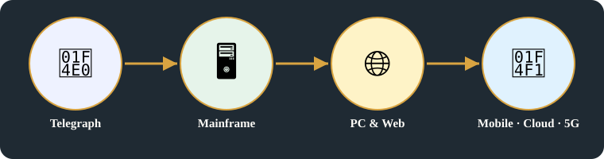
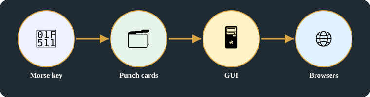
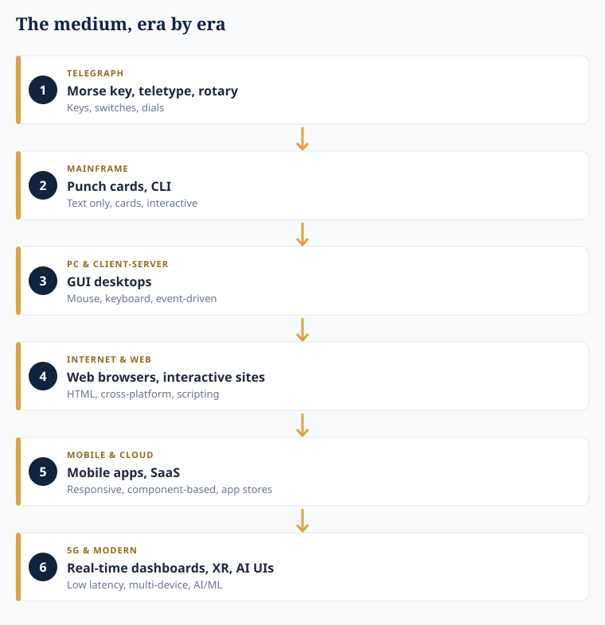
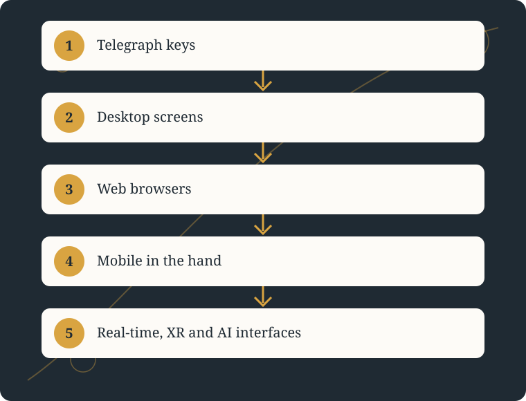
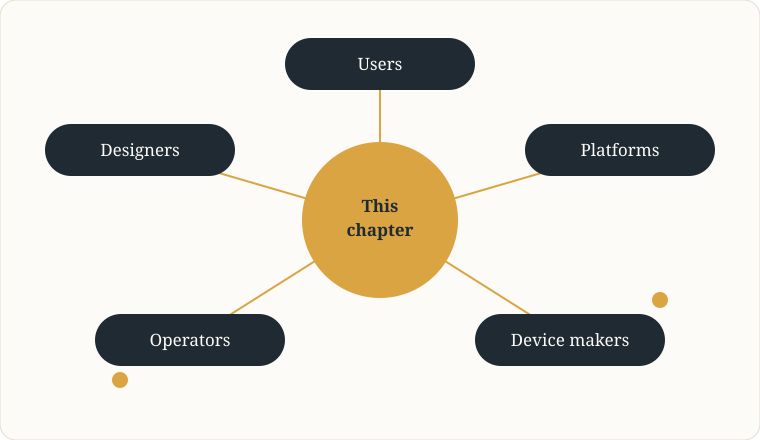

🧬 Systems Evolution
UI frameworks Evolution
How the interface changed: from telegraph keys to real-time, XR, and AI UI's
Original images +
Original headline(s) first (R15), exactly as written:
- UI frameworks Evolution
- PC & client server era
- internet & web era (1990 - 2001)
- mobile & cloud
- 5G & modern (2020 - Now)
Original pages behind this card, untouched. On the public repo these images are NOT included — they are in the Vercel deploy only, not in the public GitHub repo — the deploy itself is public, as with Batch 1.


Presentation notes — archive only, not on the main page:
- [Added, labelled exclusion:] No external images are used for this card, and voice / spatial interfaces not on these pages are not added as an era.
- The original grouping of frameworks is preserved as written in Key points; the framework distinction above is an added clarification.
Archive notes (R18) — labelling and provenance, archive only:
- Key points above are the original points for this card, as written in batch2-notes.md. Original images are in the section above, untouched.
- Tags (moved from main page, per R18): Tags #ui-frameworks-evolution #systems-evolution #software-engineering-development #hardware-computing #infrastructure-operations #network Unique tag belongs only to this card. Related tags link it to other cards that share a domain or vocabulary.
- Archive note: enhanced title, detailed explanation, and diagram for this topic are added material, not the owner's original text. Original headlines and original notes are the owner's, spelling preserved. Corrections and transcription markers are in this archive section, not in main presentation.
Detailed explanation

1. The same question, every era
- The interface is the same question in every era, answered with different hardware: what medium does a person use, what framework is public and what is private, what architecture sits behind it, and what does it feel like to use?
- Telegraph Networks (1850 – 1940): UI mediums: Morse key, teletype, rotary — keys, switches, dials; Frameworks: public – IMC; private – WU schemes, Bell switchboard; Arch: Hardware only.
- Main frame & early computing: UI mediums: Punch cards, CLI; Frameworks: public – ASCII, TTY UI; private – IBM, terminal – H/W; Arch: client → terminal – H/W; Attributes: text only, cards, interactive, API → sys calls.
2. From desktops to browsers to mobile and cloud
- PC & client server era: UI mediums: GUI Desktops (mac, windows); Frameworks: public – X11 (Linux GUI), Motif; private – MS Win 32, Apple toolbox; Arch: monolithic UI → client ↔ server; Attributes: Event driven (mouse, keyboard), multitaskin, Vendor lock-in (win only + mac on).
- Internet & web era (1990 – 2001): UI mediums: web browsers, interactive sites; Frameworks: public – W3C → HTML / CSS / JS, JQuery, Dojo; private – Adobe, MS; Arch: client – server (Chrome – HTTP); Attributes: HTML, Cross platform, Scripting (interactive).
- Mobile & cloud: UI mediums: mobile apps, SaaS; Frameworks: public – Bootstrap, AngularJS; private – IOS UI kit, Android SDK, Salesforce; Arch: frontend frameworks (Component based), REST / GraphQL / GRPC, cloud native backend; Attributes: responsive design, component reusability, app store distribution.
3. 5G & modern, and the framework distinction
- 5G & modern (2020 – Now): UI: Real time dashboards, XR, AI UI's; Frameworks: public – web: react, Nextjs, Carbon Design; mobile: flutter, Jetpack, React Native; XR: WebXR, three.js; private: apple swift UI, google, ms flu UI; Arch: micro frontend apps, cloud + Edge + AI, Real time (websockets, gRPC); Attributes: low latency UI, AI/ML, multi device.
- Framework distinction: Frameworks on the pages belong to different categories — Bootstrap is a CSS framework, React / AngularJS are UI frameworks, X11 / Motif are windowing systems — and REST / GraphQL / gRPC are API styles / technologies, not UI frameworks.
4. — R14 distinction and cross-domain vocabulary
- Every era also has a market and a customer, a vendor who supplies it, and a regulator or allocator who gates it: the customer is the person using the interface; the vendor is the company that supplies the device, framework, or app store; allocation decides which address or number the device carries (Naming, addressing and regulation: directory to DNS, RIR / ICANN); regulation decides whether it may be sold and used (Building, operating and approving a product, FCC approval). Business, market, customer, vendor, allocation, and regulation are therefore part of the UI story, not only the hardware story.
- W3C sets web standards, IETF sets Internet technical standards, ICANN allocates names and numbers, IEEE sets electrical / electronics / computing standards, and FCC / TRAI regulate nationally: the web era lists them together; their functions are distinct, as on Hardware supply and the NIC endpoint, Naming, addressing and regulation: directory to DNS, and Who controls and who builds: government layer, global oversight, and government networks, and J.
Summary:
- The medium changes, the framework split stays: public standards versus private toolkits, in every era.
- From hardware only, to cards and command lines, to graphical desktops locked to one vendor, to browsers that run anywhere, to mobile apps and cloud backends built from reusable components, to real-time, low-latency, multi-device interfaces with XR and AI.
- CLI is a UI medium here, and a management lane in The NIC and kernel stack, plus out-of-band management — same word, different lane.


In pictures


Key points
- Telegraph Networks (1850 – 1940): UI mediums: Morse key, teletype, rotary — keys, switches, dials; Frameworks: public – IMC; private – WU schemes, Bell switchboard; Arch: Hardware only
- Main frame & early computing: UI mediums: Punch cards, CLI; Frameworks: public – ASCII, TTY UI; private – IBM, terminal – H/W; Arch: client → terminal – H/W; Attributes: text only, cards, interactive, API → sys calls
- PC & client server era: UI mediums: GUI Desktops (mac, windows); Frameworks: public – X11 (Linux GUI), Motif; private – MS Win 32, Apple toolbox; Arch: monolithic UI → client ↔ server; Attributes: Event driven (mouse, keyboard), multitaskin, Vendor lock-in (win only + mac on)
- Internet & web era (1990 – 2001): UI mediums: web browsers, interactive sites; Frameworks: public – W3C → HTML / CSS / JS, JQuery, Dojo; private – Adobe, MS; Arch: client – server (Chrome – HTTP); Attributes: HTML, Cross platform, Scripting (interactive)
- Mobile & cloud: UI mediums: mobile apps, SaaS; Frameworks: public – Bootstrap, AngularJS; private – IOS UI kit, Android SDK, Salesforce; Arch: frontend frameworks (Component based), REST / GraphQL / GRPC, cloud native backend; Attributes: responsive design, component reusability, app store distribution
- 5G & modern (2020 – Now): UI: Real time dashboards, XR, AI UI's; Frameworks: public – web: react, Nextjs, Carbon Design; mobile: flutter, Jetpack, React Native; XR: WebXR, three.js; private: apple swift UI, google, ms flu UI; Arch: micro frontend apps, cloud + Edge + AI, Real time (websockets, gRPC); Attributes: low latency UI, AI/ML, multi device
Horizontal links
- Telegraph thread → Why networks exist: origins and business need (origins, human → mechanical → electronic).
- Hardware thread → Hardware supply and the NIC endpoint (NIC endpoint, the hardware the UI runs on).
- Kernel / TCP/IP under the UI → The NIC and kernel stack, plus out-of-band management. Note: CLI is a UI medium here, and a management lane there — same word, different lane.
- Cloud / 5G thread → The NIC and kernel stack, plus out-of-band management (network device, TCP/IP).
Related topics
Related cards in learning order, with their technical perspectives as lenses — not duplicate cards in domain boxes.
- The universal product: four parallel flows, cross flow, and the full value chain — Univescal product / Business (network / Standards
Systems evolution · technical perspectives: industrial-business-networks, infrastructure-operations, institutions-markets - Who controls and who builds: government layer, global oversight, and government networks — Govt Layer (TO controll public
Systems evolution · technical perspectives: institutions-markets, industrial-business-networks, infrastructure-operations, hardware-computing - Why networks exist
Systems evolution